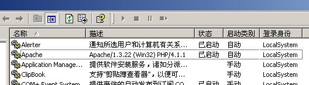

| 在 Windows 2000 下以 Apache 模块方式安装 PHP 4.1.1 □ 文/Platinum.soulogic.com |
| 该安装说明为草稿，可能有遗漏的地方。 本文作者所使用的软件版本为： Windows 2000 Server build 2195 PHP 4.1.1 Apache 1.3.22 如果你是第一次安装 PHP，希望你能先完全按照下面的说明（包括路径名等）安装一次，如果你已经以 CGI 方式成功安装了 PHP，想试一试 Apache 模块方式，请点击这里直接看第四步。 |
| 第一步：下载软件 |
| 有一个很必要的习惯就是只在官方站点下载所需要的软件。 Apache 官方下载页面：http://www.apache.org/dist/httpd/binaries/win32/ PHP 官方下载页面：http://www.php.net/downloads.php ※ 注意：PHP 必须下载 zip 压缩包而不是那个 .exe 文件，否则将无法以模块方式安装。 |
| 第二步：安装 Apache 和 PHP |
| 整个安装过程很简单，运行 Apache 安装文件，中途需要你填写主机名和管理员信箱等，如果是单机则不必理会这些，随便写点什么就可以了。反正以后还可以修改。 下图为 Apache 安装过程中的界面 至于 PHP，直接将 PHP 包解压缩到一个目录即可。 这里推荐一下我的习惯，一般人们将 Apache 安装到 C:\Program Files 里，而将 PHP 解压缩到 C:\PHP——我认为除非你的硬盘只有一个区时才需要这么做。我习惯上将他们统统放到 E:\Server 目录，以后所有和 Web Server 有关的东西都放到那里，比方说 MySQL。这样当你以后重装系统的后恢复整个 Web Server 变的非常轻松。 注意下图的安装路径。 当 Apache 安装结束后，它就已经开始运行了，以后你可以通过开始菜单的 程序 → Apache HTTP Server → Control Apache Server 来启动(Start)、重启(Restart)或者停止(Stop) Apache。当然，通过“管理工具”中的“服务”也可以对 Apache 进行相同的操作。 |
| 第四步：以模块方式安装 PHP |
| 首先将 PHP 目录（E:\Server\PHP）下的 php.ini-recommended 文件改名为 php.ini 并拷贝到 Apache 目录下，如“E:\Server\Apache”。和 httpd.conf 的功能一样，所有 PHP 的配置选项都记录在 php.ini 里。这里有几个需要改动的地方： extension_dir = ./ 改为 extension_dir = "E:\Server\PHP\extensions" doc_root = 改为 doc_root = "E:\www" session.save_path = /tmp 改为 session.save_path = "C:\WINNT\Temp" ;upload_tmp_dir = 改为 upload_tmp_dir = "C:\WINNT\Temp"。注意 ; 号要去掉，下同。 ;default_charset = "iso-8859-1" 改为 default_charset = "gb2312" 有一排 ;extension=php_xxx.dll 根据需要将开头的 ; 号去掉，如 php_gd.dll 可以使用 GD 库做图、php_mssql.dll 用来连接 Microsoft SQL Server 等。当你确实需要该功能的时候再去掉 ; 号，否则只能浪费系统资源。 改完 PHP.ini 之后将 PHP 目录下的 php4ts.dll 文件拷贝到 C:\WINNT\system32 目录。 最后修改 Apache 的 httpd.conf 文件。在文件的末尾添加如下三行： LoadModule php4_module E:/Server/PHP/sapi/php4apache.dll AddModule mod_php4.c AddType application/x-httpd-php .php 第三行为设定后缀，如果你愿意，可以继续加 AddType application/x-httpd-php .php3 AddType application/x-httpd-php .phtml 等等，这样服务器上的所有该后缀的文件都将作为 PHP 脚本来运行。 查找 DirectoryIndex index.html 这行，将在 index.html 的前面加上一个“index.php”，二者之间要有空格。 所有这些都完成后，重起 Apache。在 E:\www 新建一个名为 ver.php 的文件，该文件的内容只有三行： <?PHP phpinfo() ?> 保存之后打开浏览器，在地址栏中敲入 http://localhost/ver.php，如果能看到一个很长的表单说明（如下图所示）安装成功。 现在打开管理工具 → 服务，也可以看到 Apache 的描述有了变化。 
如果在你的机器上也看到了相同的画面，那么，恭喜你，你已经完成 PHP 模块方式的安装。 - 全文完 - |